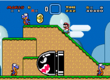

Linguagens de Programação e Frameworks que conheço
- Por causa dos estudos e participações em eventos de programação, já tive contato com algumas linguagens, conceitos e bibliotecas, como:
- PHP
- Java
- C/ C#
- Javascript/ Typescript
- Node, React, React Native
- Pyhton
- Flask, Beautiful Soup, Pandas
- Além, é claro, das clássicas linguagens de marcação e estilização, HTML e CSS
Hobbies
- Gosto de assistir filmes e séries, como “O Jogo da Imitação” e “Sillicon Valley”
- Praticar esportes, desde vôlei e futebol, à ping pong e artes marciais sempre foi um momento de lazer para mim
- Jogar jogos eletrônicos, sozinha ou com amigos, como Stardew Valley, ou jogos de tabuleiro, como Damas e Banco Imobiliário, e ainda jogos de console, como Mário ou Just Dance
- Adoro escrever e desenhar nos meus tempos livres de inspiração também
